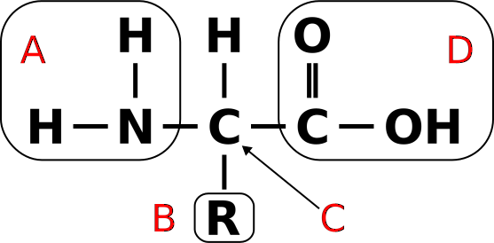
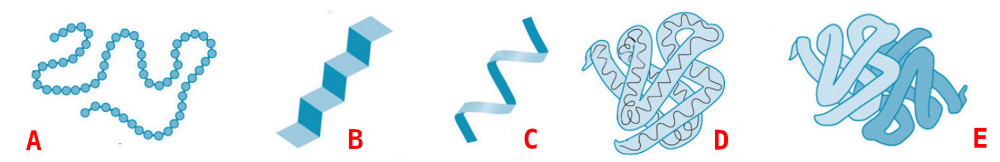

Exercise sheet 6: Proteins & Translation
Exercise 1 - The genetic code
The standard genetic code describes how 64 possible codons encode 20 amino acids and the stop translation signal. It enables DNA-encoded mRNA to be translated into amino acid sequences and is common to all living organisms on Earth.

 Note
Note1a)
Which aminoacid is encoded by the codon UAC?
Hide
Hint : Possible Answers
- Histidine
- Proline
- Tyrosine
Solution
- Histidine
- Proline
- Tyrosine
1b)
How many codons encode the aminoacid Valine?
Hide
Hint : Possible Answers
- 4
- 2
- 3
Solution
- 4
- 2
- 3
1c)
Which aminoacid sequence is encoded by the following codons?
AUG-UGC-CUU-ACU-AAA-AGU-CGU-CAU-GAC-GAG-CUG-UAC-GGG-UGAHide
Hint : Possible Answers
- Met-Cys-Leu-Trp-Lys-Ser-Arg-His-Asp-Glu-Leu-Tyr-Gly
- Met-Trp-Leu-Thr-Lys-Ser-Arg-His-Asp-Glu-Leu-Tyr-Gly
- Met-Cys-Leu-Thr-Lys-Ser-Arg-His-Asp-Glu-Leu-Tyr-Gly
Solution
- Met-Cys-Leu-Trp-Lys-Ser-Arg-His-Asp-Glu-Leu-Tyr-Gly
- Met-Trp-Leu-Thr-Lys-Ser-Arg-His-Asp-Glu-Leu-Tyr-Gly
- Met-Cys-Leu-Thr-Lys-Ser-Arg-His-Asp-Glu-Leu-Tyr-Gly
Exercise 2 - Protein structures
2a)
Name the parts corresponding to the figure below

Hide
Hint
The Names are:
alpha carbon amino group, carboxyl group and side chain.
Solution
- amino group
- side chain
- alpha carbon
- carboxyl group
2b)
Select the peptide bound in the following dipeptide.

Hide
Hint
A peptide bond is an amide type of covalent chemical bond linking two consecutive alpha-amino acids via the carbon atom nr. 1 of the first and the nitrogen atom nr 2 of the second amino acid.
Solution
A peptide bond is an amide type of covalent chemical bond linking two consecutive alpha-amino acids via the carbon atom nr. 1 of the first and the nitrogen atom nr 2 of the second amino acid.
B
2c)
The 3D structure of a protein is very important for its function. Name the structure types in the figure below.

Hide
Hint
Match the names
- primary structure
- secondary structure
- tertiary structure
- quaternary structrue
- alpha-helix
- beta-sheet. Note that can be multiple correct options.
Solution
- primary structure
- secondary structure, beta sheet
- secondary structure, alpha helix
- tertiary structure
- quaternary structure
Exercise 3 - What are enzymes?
Enzymes are important molecules because they can substantially speed up chemical reactions and enhance their specificity. They are sometimes referred to as biocatalysts. Catalysts are compounds that influence chemical reactions being used up as a result. In other words, they are reusable. A single enzyme molecule processes about 100.000 to 5 million molecules every minute.
Shortly explain the function of the further mentioned enzymes regarding their role in prokaryotic translation or transcription
3a)
DNA Polymerase III
Hide
Solution
DNA Polymerase III is responsible for bacterial chromosomal DNA replication, along with the helicase and primase, at the replication fork.
3b)
DNA Ligase
Hide
Solution
The DNA Ligase catalyze the formation of a phosphodiester bond between the 5’-P group of one single DNA strand with the adjacent 3’-OH group of another chain.
3c)
RNA Polymerase
Hide
Solution
RNA Polymerases are enzymes responsible for copying a DNA sequence into an RNA sequence, during the process of transcription.
3d)
RNAse H
Hide
Solution
Ribonucleases H are enzymes that cleave the RNA of RNA/DNA hybrids that form during replication and repair and which could lead to DNA instability if they were not processed.
3e)
DNA Helicase
Hide
Solution
DNA Helicases are enzymes that are able to unwind DNA by the use of the energy-equivalent ATP. They play essential roles in DNA replication, DNA repair, and DNA recombination in all organisms.
3f)
DNA Primase
Hide
Solution
DNA primase catalyses the synthesis of short RNA molecules used as primers for the DNA polymerase during DNA replication
Exercise 4 - The RCSB Protein Database - PDB
Protein structures are hard to resolve. Therefore, identified protein structures are stored in according databases to enable a fast access and to gather all data associated. An example is the RCSB Protein Data Base (PDB).

Lapinaite, A., Knott, G. J., Palumbo, C. M., Lin-Shiao, E., Richter, M. F., Zhao, K. T., … & Doudna, J. A. (2020). DNA capture by a CRISPR-Cas9–guided adenine base editor. Science, 369(6503), 566-571.
Access the protein information of the above shown protein SpCas9 with PDB-ID 6VPC and answer the following questions:
4a)
From which organism is this protein?
Hide
Solution
Streptococcus pyogenes and Escherichia coli
4b)
How many amino acids does this protein consist of?
Hide
Solution
The Cas9 subunit has \(1361\) aminoacids, whilst the deaminase consists of \(227\) amino acids.
\(1361 + 227 = 1588\)